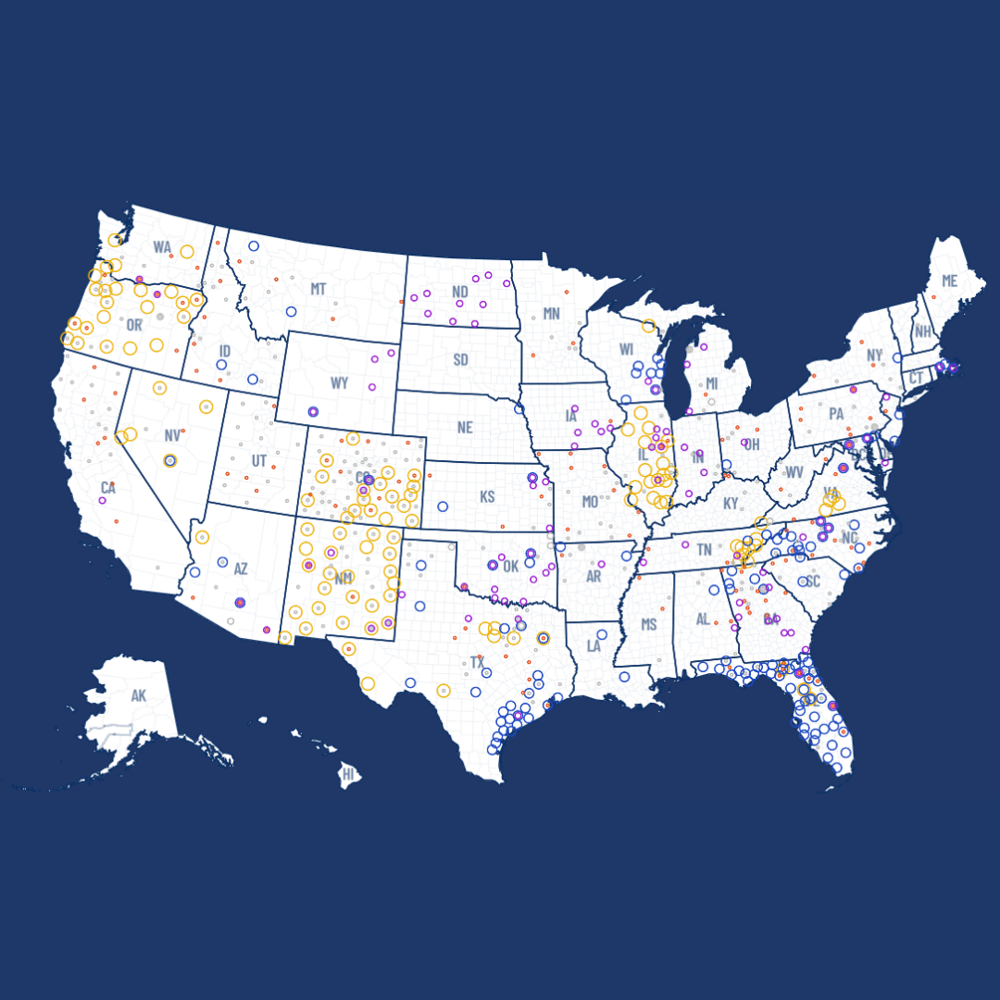
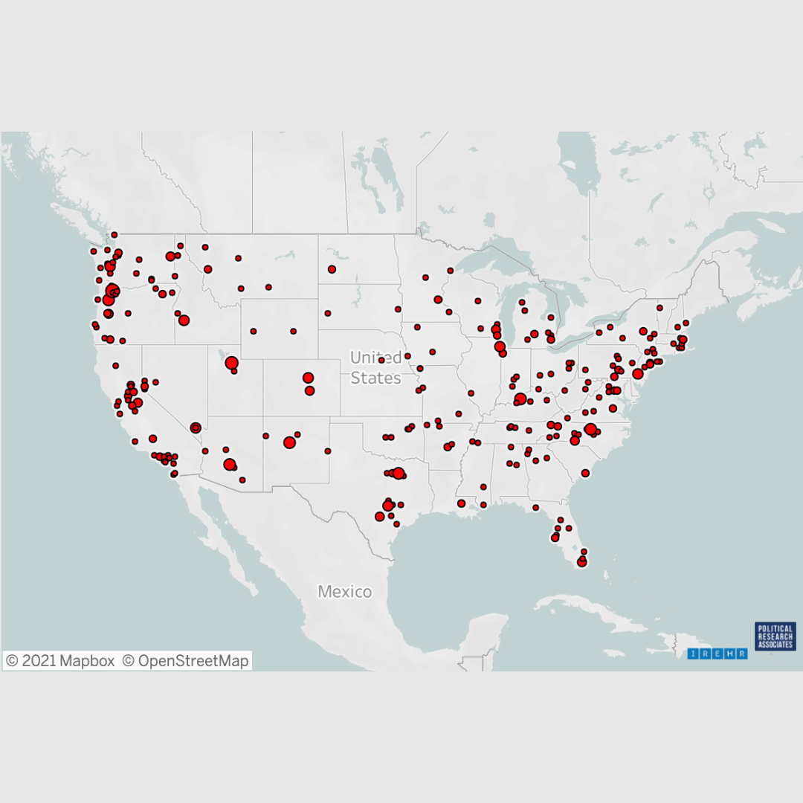

Olivia Lawrence-Weilmann
About
Projects + Research
Resume
Contact

Mapping Far Right and Anti-Immigrant Movement Alignment with County Sheriffs

Mapping Paramilitary and Far-Right Threats to Racial Justice
Mutual Aid Medford and Somerville
© 2021 Olivia Lawrence-Weilmann | Development + Design by Olivia Lawrence-Weilmann